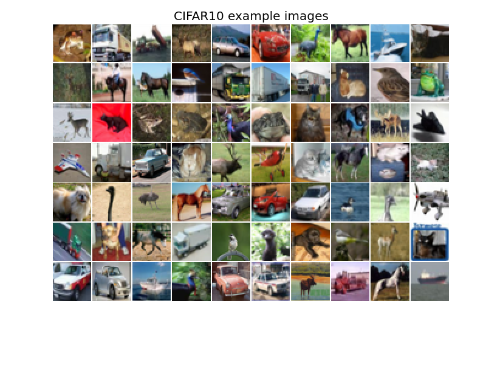
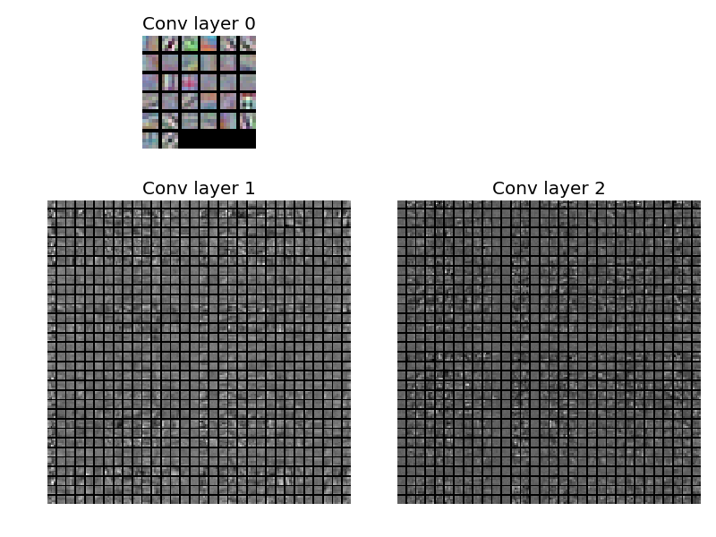

Convnets for image classification (2)¶
 Script output:
Test error rate: 0.3108
Python source code: convnet_cifar.py
import numpy as np
import matplotlib
import matplotlib.pyplot as plt
import deeppy as dp
# Fetch CIFAR10 data
dataset = dp.dataset.CIFAR10()
x_train, y_train, x_test, y_test = dataset.data(dp_dtypes=True)
# Normalize pixel intensities
scaler = dp.StandardScaler()
scaler.fit(x_train)
x_train = scaler.transform(x_train)
x_test = scaler.transform(x_test)
# Prepare network inputs
batch_size = 128
train_input = dp.SupervisedInput(x_train, y_train, batch_size=batch_size)
test_input = dp.SupervisedInput(x_test, y_test, batch_size=batch_size)
# Setup network
def conv_layer(n_filters):
return dp.Convolution(
n_filters=32,
filter_shape=(5, 5),
border_mode='full',
weights=dp.Parameter(dp.AutoFiller(gain=1.25), weight_decay=0.003),
)
def pool_layer():
return dp.Pool(
win_shape=(3, 3),
strides=(2, 2),
border_mode='same',
method='max',
)
net = dp.NeuralNetwork(
layers=[
conv_layer(32),
dp.Activation('relu'),
pool_layer(),
conv_layer(32),
dp.Activation('relu'),
pool_layer(),
conv_layer(64),
dp.Activation('relu'),
pool_layer(),
dp.Flatten(),
dp.DropoutFullyConnected(
n_out=64,
weights=dp.Parameter(dp.AutoFiller(gain=1.25), weight_decay=0.03)
),
dp.Activation('relu'),
dp.FullyConnected(
n_out=dataset.n_classes,
weights=dp.Parameter(dp.AutoFiller(gain=1.25)),
)
],
loss=dp.MultinomialLogReg(),
)
# Train network
def val_error():
return net.error(test_input)
n_epochs = [8, 8]
learn_rate = 0.05
for i, max_epochs in enumerate(n_epochs):
lr = learn_rate/10**i
trainer = dp.StochasticGradientDescent(
max_epochs=max_epochs,
learn_rule=dp.Momentum(learn_rate=lr, momentum=0.9),
)
trainer.train(net, train_input, val_error)
# Evaluate on test data
error = net.error(test_input)
print('Test error rate: %.4f' % error)
# Plot image examples.
def plot_img(img, title):
plt.figure()
plt.imshow(img, interpolation='nearest')
plt.title(title)
plt.axis('off')
plt.tight_layout()
img_bhwc = np.transpose(x_train[:70], (0, 2, 3, 1))
img_tile = dp.misc.img_tile(dp.misc.img_stretch(img_bhwc), aspect_ratio=0.75,
border_color=1.0)
plot_img(img_tile, title='CIFAR10 example images')
# Plot convolutional filters.
filters = [l.W.array for l in net.layers if isinstance(l, dp.Convolution)]
fig = plt.figure()
gs = matplotlib.gridspec.GridSpec(2, 2, height_ratios=[1, 3])
subplot_idxs = [0, 2, 3]
for i, f in enumerate(filters):
ax = plt.subplot(gs[subplot_idxs[i]])
ax.imshow(dp.misc.conv_filter_tile(f), cmap='gray',
interpolation='nearest')
ax.set_title('Conv layer %i' % i)
ax.axis('off')
plt.tight_layout()
Total running time of the example: 3 minutes 19.3 seconds

{kind=link}
{kind=link}